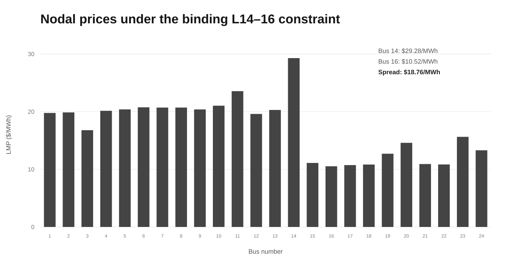
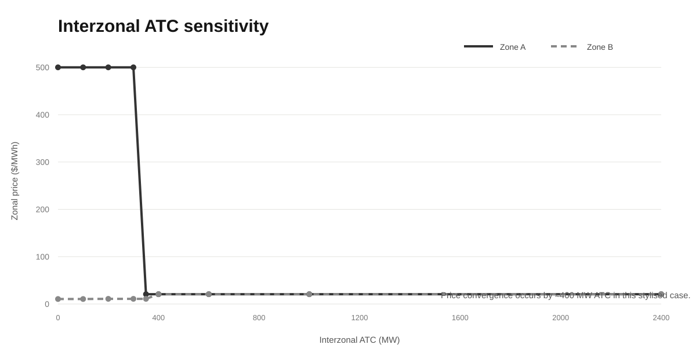
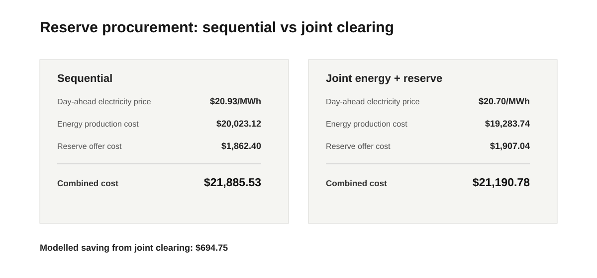

Overview
The assignment develops the same stylised power system through successive market layers rather than treating each market design in isolation. A copper-plate energy market is first cleared under uniform pricing, then extended to 24 hours with storage. The transmission network is subsequently introduced for nodal and zonal pricing, followed by balancing-market settlement and reserve procurement.
The implementation uses PyPSA with HiGHS for market-clearing optimisation and SciPy linear programming for reserve/joint-clearing formulations. Generator, wind, demand and line data are represented explicitly so prices, dispatch, welfare and congestion rents can be reconciled against the optimisation solution.
Copper-plate energy market & KKT verification
In the single-hour copper-plate case, 2,207 MW of demand clears at a uniform market price of $20.70/MWh. The model reports production cost of about $19,260.57 and social welfare of about $1.084 million. The marginal unit is partially dispatched at its marginal cost, and the market-clearing price is independently checked using the KKT stationarity condition.
Multi-hour market with storage
The copper-plate problem is extended to a 24-hour horizon with a 300 MW / 4-hour storage unit. In the submitted case, storage charges during lower-price hours and discharges into higher-price periods, earning a modelled $9,571.33 over the day. System production cost falls by about $9,613.44, with the same increase in social welfare under the assignment assumptions.
This is a stylised market-clearing result under the assignment's bidding and efficiency assumptions; it is not a forecast of real storage merchant revenue.
Nodal pricing, congestion & transmission value
The market is then mapped to a 24-bus, 34-line network. The L14–16 interface binds at its 250 MW limit, creating locational prices from $10.52/MWh at Bus 16 to $29.28/MWh at Bus 14—a spread of about $18.76/MWh. The binding line has a modelled shadow value of $26.75 per MW for the hour.

A transmission-capacity sensitivity from 150 to 400 MW shows the shadow value declining as the constraint is relaxed. Raising L14–16 from 250 to 251 MW increases welfare by $26.7463—matching the line's shadow value numerically. By 300 MW, the line is no longer binding and the price spread disappears in this case.
Zonal pricing, ATC & redispatch
The same network is aggregated into two zones and cleared using an interzonal Available Transfer Capacity (ATC). The sensitivity analysis shows how insufficient ATC creates large zonal price separation, while increasing transfer capability converges the two zones toward the copper-plate price.

The assignment also checks whether a zonal schedule is physically feasible when mapped back to the full network. With the simplified 2,400 MW ATC assumption, L14–16 is overloaded by about 1.80 MW. Restoring network feasibility requires 4.726 MW of upward and downward redispatch and increases production cost by about $48.11. This illustrates why zonal market clearing can require ex-post redispatch even when the aggregate interzonal transfer appears feasible.
Balancing market & imbalance settlement
A one-hour balancing case combines a conventional-generator outage with wind-forecast deviations. The resulting shortfall is 134.759 MW, cleared through upward regulation at a balancing price of $22.793/MWh. The notebook then reconciles actual production, real-time energy balance and generator/wind-farm profits under one-price and two-price settlement rules.
Reserve procurement & joint clearing
The reserve stage procures upward reserve equal to 15% of demand and downward reserve equal to 10%: 331.05 MW and 220.70 MW, respectively. When reserve is procured sequentially before the day-ahead energy market, reserved headroom changes the feasible generator schedules and raises the day-ahead electricity price from $20.70/MWh to $20.93/MWh.

The optional joint optimisation co-optimises energy and reserves. Although reserve-offer cost increases slightly, lower energy-production cost more than offsets it, reducing the combined modelled cost from about $21,885.53 to $21,190.78.
Model scope & source material
The work is an educational market-design model built around the IEEE RTS-style 24-bus system and assignment-specific bids, forecasts and settlement rules. It demonstrates optimisation structure and price formation rather than attempting to reproduce a particular real-world ISO/RTO market.
The sourced wind-forecast mapping in the notebook is explicitly provisional rather than a verified geographical mapping. The network and market rules are stylised, and the reported prices, profits and welfare values should be interpreted only within the assignment assumptions.